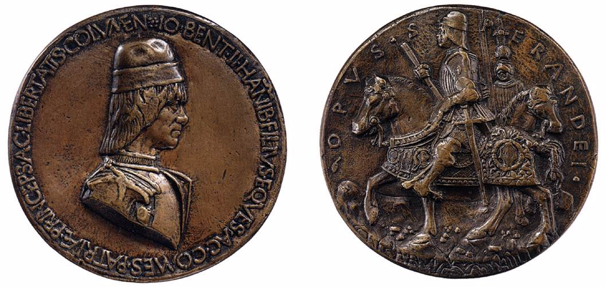
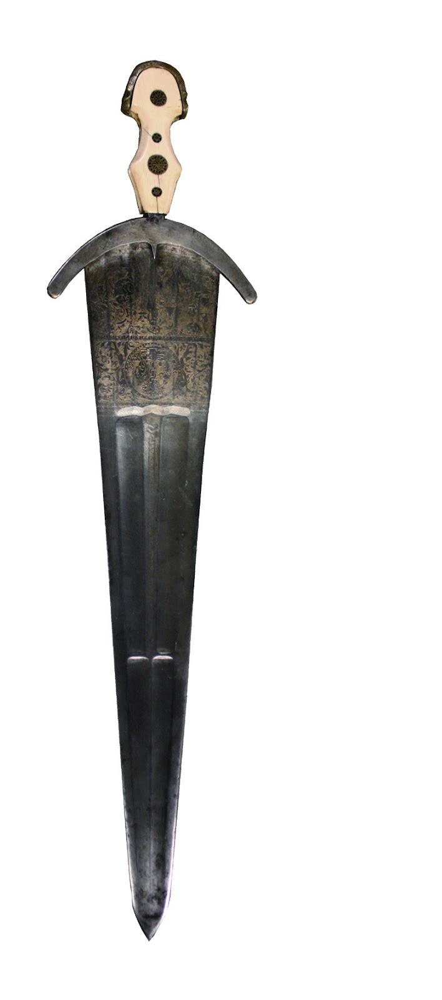

Medaglia di Giovanni II Bentivoglio
Sperandio Savelli (ca. 1462)

Descrizione dell'Item
Questa medaglia bronzea in rilievo fu fusa da Sperandio Savelli, uno dei più celebri medaglisti e scultori del Rinascimento italiano, durante il suo lungo soggiorno bolognese al servizio della corte bentivolesca.
Il dritto della medaglia mostra il busto di profilo di Giovanni II Bentivoglio, ritratto con berretto e abiti signorili, circondato da un'iscrizione celebrativa in capitale latina. Il rovescio raffigura il signore di Bologna a cavallo in tenuta da militare o allegorie del suo potere politico e militare, rappresentando uno strumento fondamentale di propaganda e diplomazia cortigiana dell'epoca.
Metadati Descrittivi (Dublin Core)
| Identificativo ID | IT05 |
|---|---|
| Titolo | Medaglia commemorativa di Giovanni II Bentivoglio |
| Autore / Medaglista | Savelli, Sperandio (Sperandio da Mantova) (Authority: VIAF) |
| Datazione | ca. 1462 |
| Tipologia Item | Oggetto Tridimensionale / Medaglia in bronzo fuso |
| Soggetto Raffigurato | Giovanni II Bentivoglio |
| Luogo di Conservazione | Museo Civico Medievale di Bologna |
| Soggetti / Temi | Giovanni II Bentivoglio, Medaglistica rinascimentale, Numismatica, Sperandio Savelli, Ritratto di profilo |
| Collezione & Licenza |
Collezione: La Bologna Bentivolesca (1463–1506) Diritti: Pubblico Dominio (Opera) / CC BY 4.0 (Dati) |
Codifica SORGENTE (XML / Dublin Core)
Scarica File XML DCDi seguito viene mostrata la codifica semantica in formato XML-Dublin Core associata a questo item del catalogo:
<oai_dc:dc xmlns:oai_dc="http://www.openarchives.org/OAI/2.0/oai_dc/"
xmlns:dc="http://purl.org/dc/elements/1.1/"
xmlns:xsi="http://www.w3.org/2001/XMLSchema-instance"
xsi:schemaLocation="http://www.openarchives.org/OAI/2.0/oai_dc/ http://www.openarchives.org/OAI/2.0/oai_dc.xsd">
<dc:title>Medaglia commemorativa di Giovanni II Bentivoglio</dc:title>
<dc:creator>Savelli, Sperandio (ca. 1431-1504)</dc:creator>
<dc:contributor>Bentivoglio, Giovanni II (Soggetto e Committente)</dc:contributor>
<dc:subject>Giovanni II Bentivoglio</dc:subject>
<dc:subject>Medaglistica rinascimentale</dc:subject>
<dc:subject>Numismatica bolognese</dc:subject>
<dc:subject>Rinascimento emiliano</dc:subject>
<dc:description>Medaglia celebrativa in bronzo fuso realizzata da Sperandio Savelli raffigurante sul dritto il busto di profilo di Giovanni II Bentivoglio e sul rovescio una figura allegorica e cavalleresca.</dc:description>
<dc:publisher>Museo Civico Medievale di Bologna</dc:publisher>
<dc:date>1462</dc:date>
<dc:type>PhysicalObject</dc:type>
<dc:format>Bronzo / Scultura e fusione in metallo</dc:format>
<dc:identifier>IT05</dc:identifier>
<dc:source>Museo Civico Medievale, Bologna (BO), Italia</dc:source>
<dc:language>lat</dc:language>
<dc:coverage>Bologna, 1462-1463</dc:coverage>
<dc:rights>Pubblico Dominio</dc:rights>
<dcterms:license>https://creativecommons.org/licenses/by/4.0/</dcterms:license>
</oai_dc:dc>Connessioni di Rete
Archi della rete grafi collegati a questo nodo:
- fusa da Sperandio Savelli
- ritrae Giovanni II Bentivoglio
- conservata presso Museo Civico Medievale
Item Correlati

Ritratto di Giovanni II e Ginevra
Dipinto dei profili dei due coniugi Bentivoglio